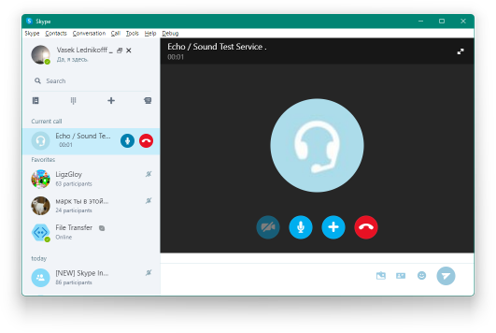

Использовать одну учетную запись Skype на всех устройствах…

KSkype для рабочего стола Windows
-


КSkype для рабочего стола Windows
Благодаря КSkype и сети Скайп можно сделать столько полезного и приятного! Например, рассказать детям сказку на ночь, провести совещание или взять урок иностранного языка.
Вот список лишь некоторых полезных функций:
- Бесплатные звонки между абонентами Skype.
- Звонки на мобильные и стационарные телефоны по низким тарифам и недорогие SMS-сообщения.
- Видеосвязь с пользователями Skype.
- Бесплатный обмен мгновенными сообщениями с друзьями, близкими и коллегами.
Для начала работы вам потребуются ОС Windows 7, 8.0, 8.1, 10 или 11, веб-камера для видеозвонков и микрофон.
Skype для рабочего стола Windows
Все еще нужна помощь? Посетите сайт технической поддержки
Все еще нужна помощь? Посетите сайт технической поддержки
или выберите другую версию
TSkype
Фанатский косплей дизайна MS Teams который зайдет немногим, и все равно все будут качать обычный KSkype
Macintosh
KSkype на Macintosh – это отправка сообщений, звонки друзьям и близким и возможность поделиться с ними самым важным с помощью видеосвязи.
Linux
Установите последнюю версию KSkype для Linux с лучшей за все время существования программы многозадачностью.